Software Engineer · Full-Stack Developer · AI/ML Engineer
SmartAuth
AI-powered prior authorization platform automating healthcare document intake and routing
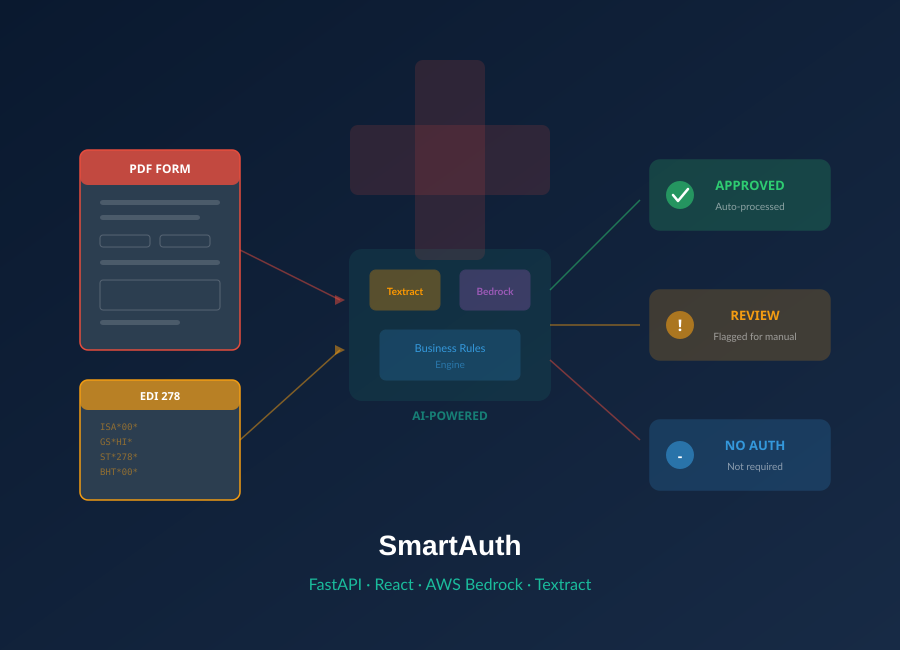
DuctVision
HVAC duct detection and measurement tool using computer vision on PDF drawings
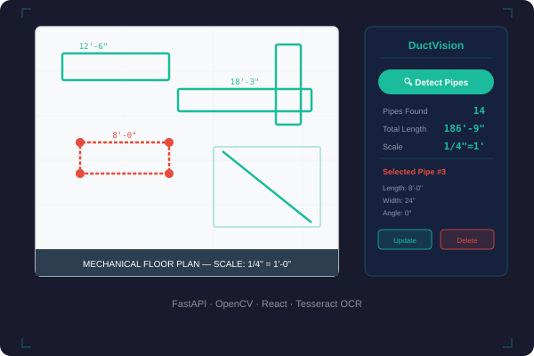
Agentic AI RAG System
AI-driven chat system with RAG pipeline using Chroma, Ollama 3.2, and DeepSeek R1
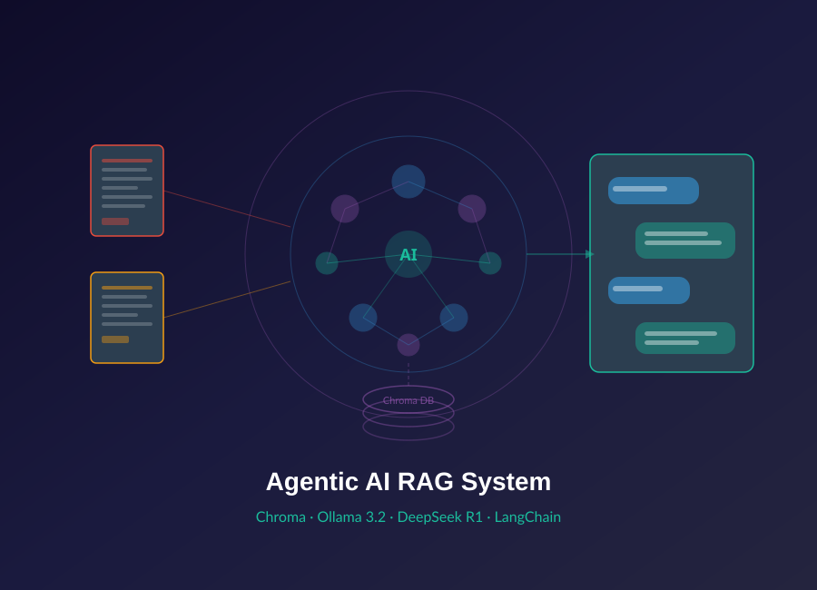
OpenVMS to AWS Migration
Migrated legacy MUMPS code to cloud-native AWS environment
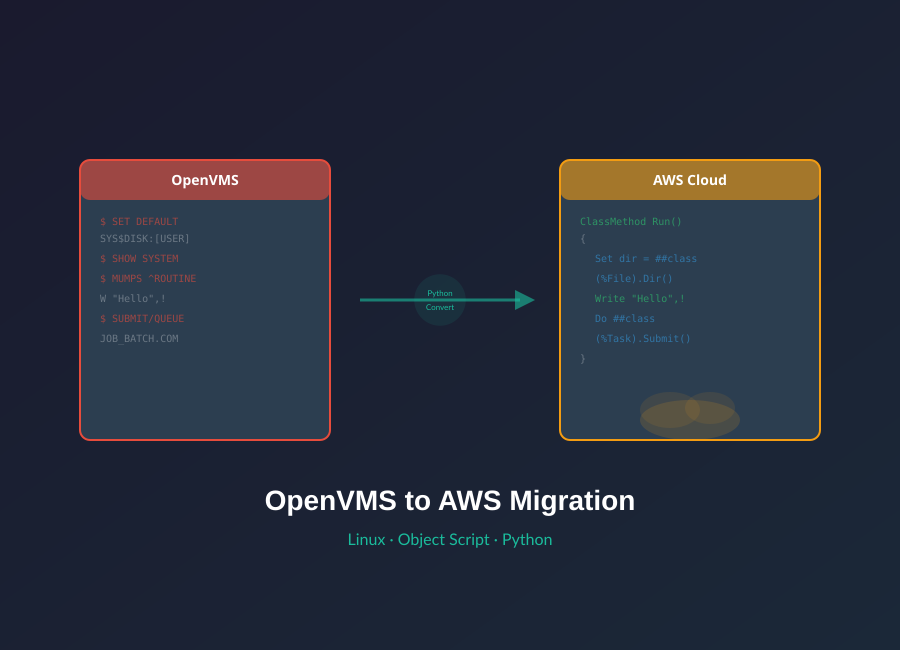
Distribution Management Tool
Improved page loading speed by 40% with Redis caching and SQL optimization
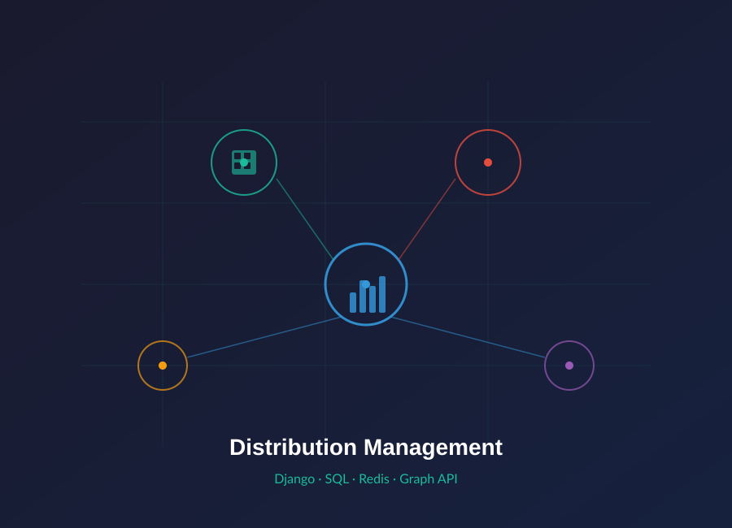
Automated Report Generation
Extracts data from PDF/Word files to generate structured MS Word reports
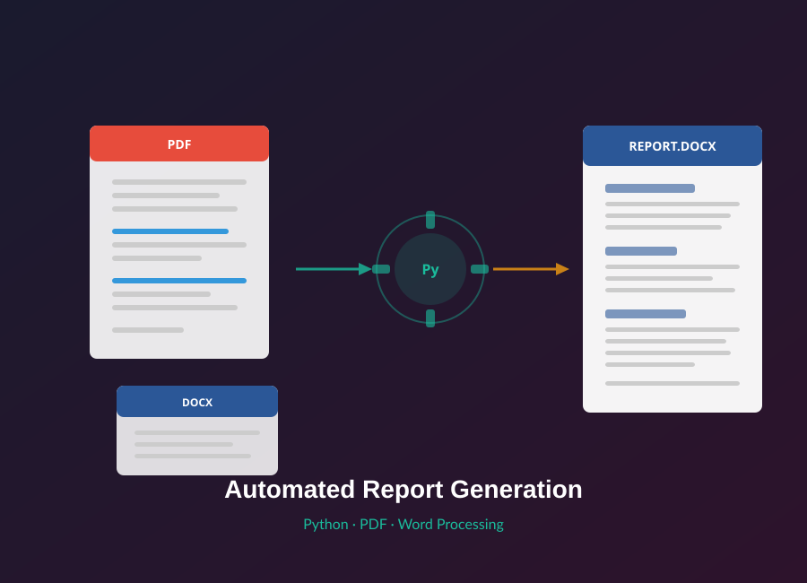
Resume Scanner
REST API that matches resumes against job descriptions using NLP
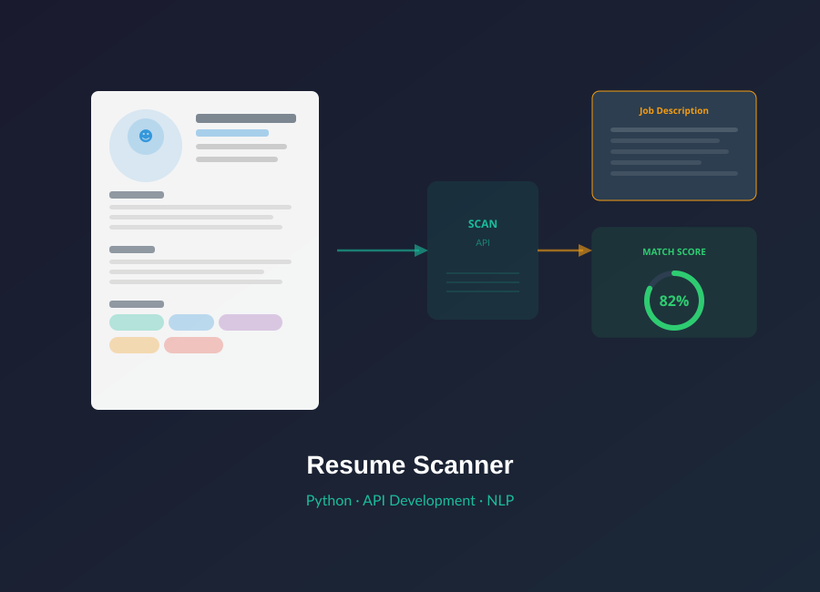
Application Metrics Tool
Streamlit dashboard for real-time metrics, errors, and logs
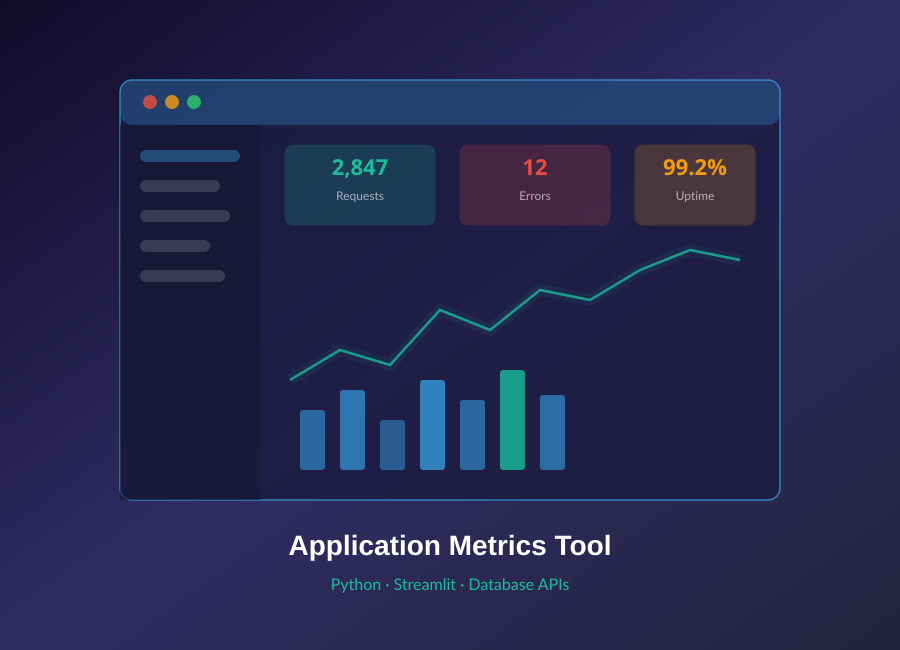
PDF Blue Link Validator
Detects broken hyperlinks in PDF files, saving 5 min per document
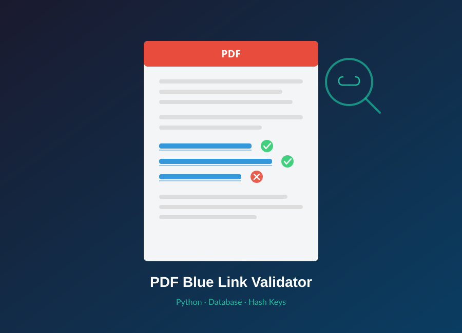
Service Request Automation
Desktop tool that automates service request creation, saving 30 min per request
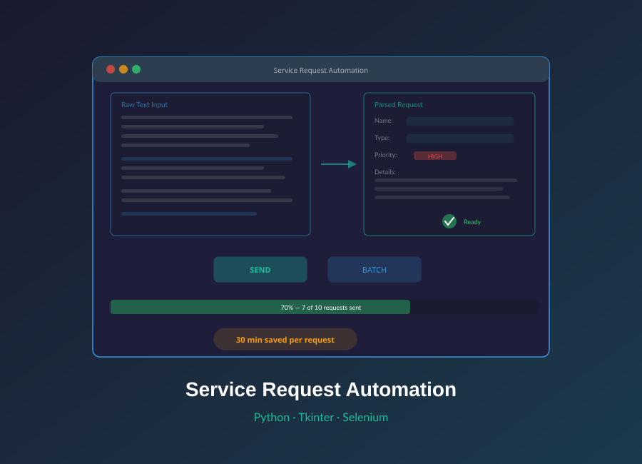
Orca (Django WebApp)
Automated product release notifications for distributors and partners
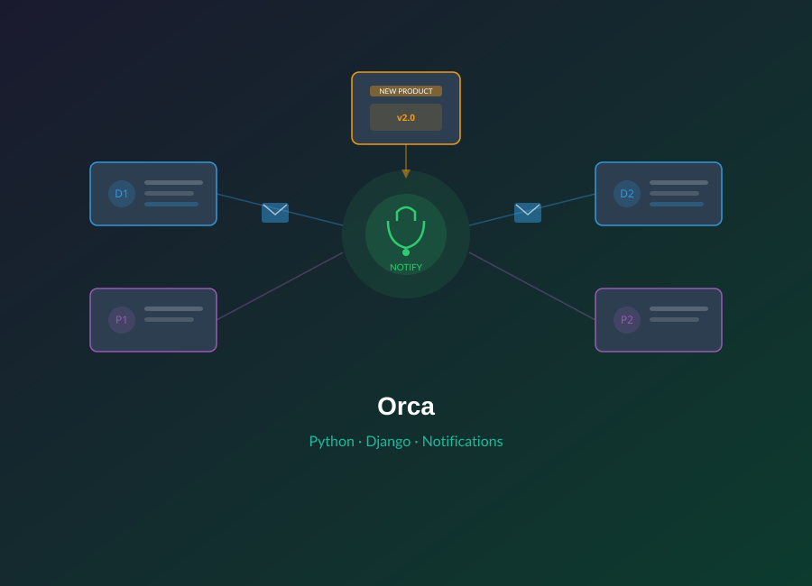
Copy Trading
Automated crypto copy trading between Binance accounts (SPOT + Futures)
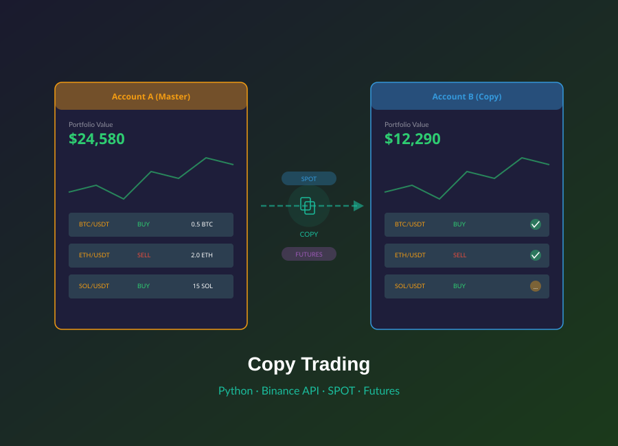
Email Validator
Validates email syntax, DNS/MX records, and SMTP deliverability
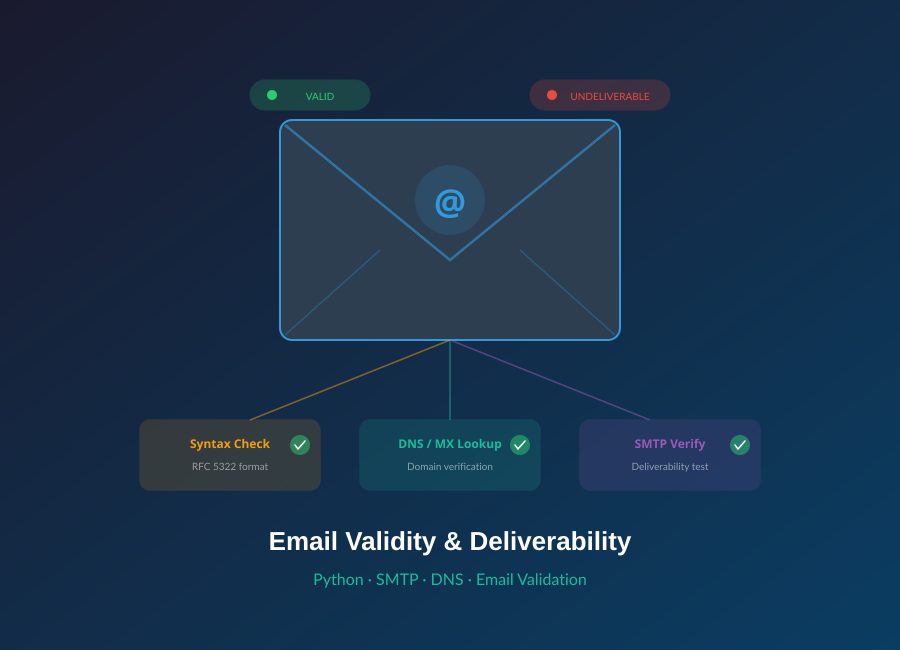
CC Bill Reminder
Consolidates credit card data from email statements into one dashboard
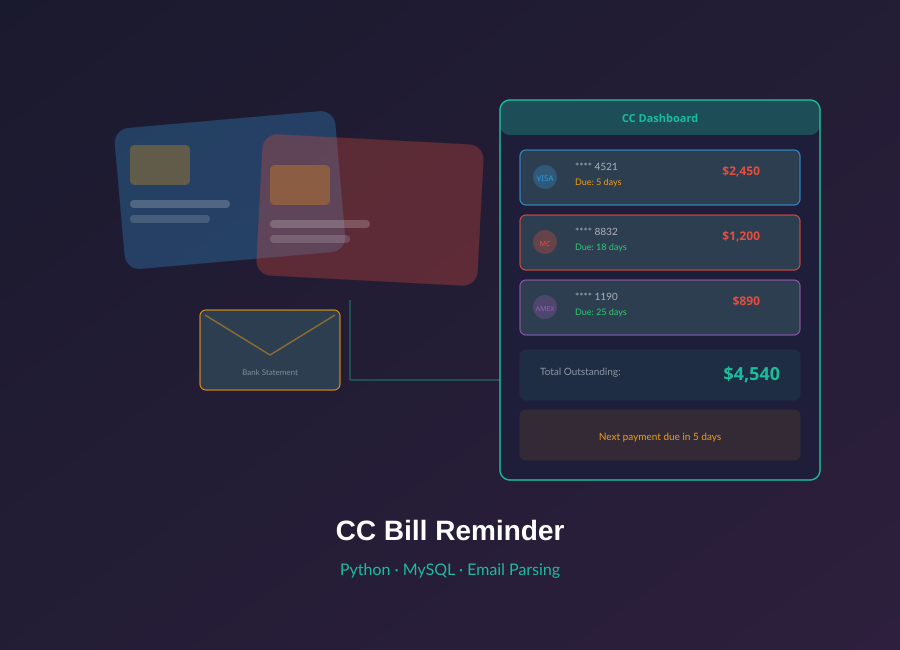
Easter Science
Educational platform with exam papers, Q&A, tech news, and programming solutions
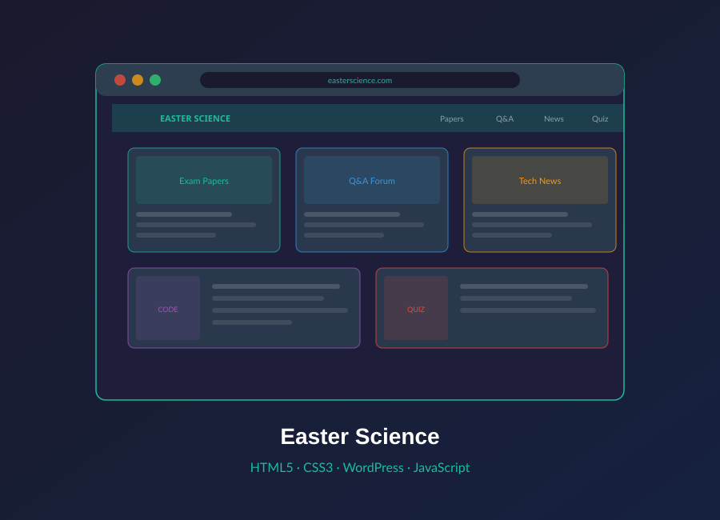
Easter Text Editor
Desktop text editor with calculator, text-to-speech, and code generator
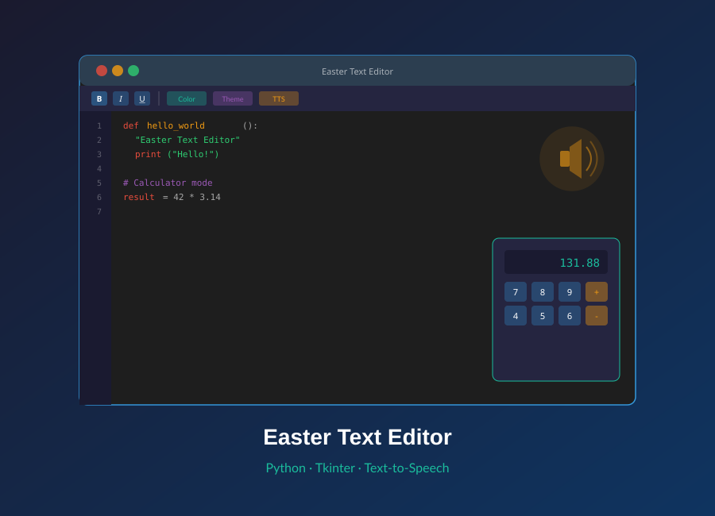
Lucky Tailor
Responsive catalog website for a tailoring business
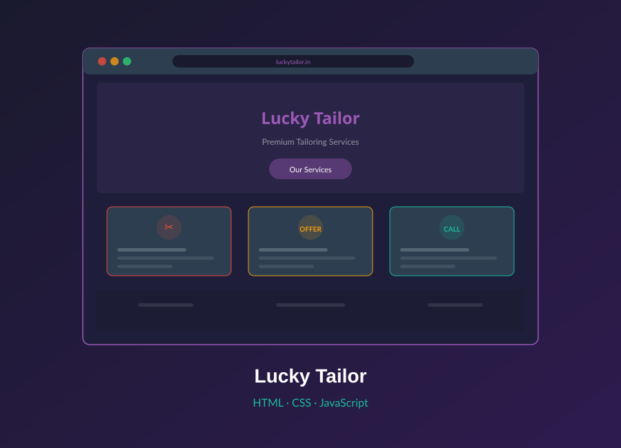
Easter Music Player
Web-based live streaming music application
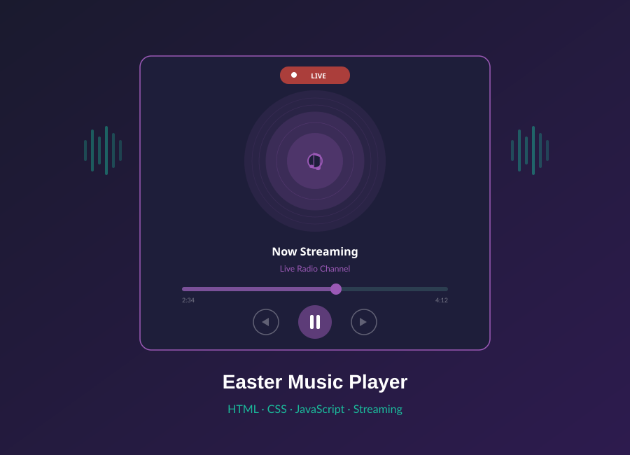
Results-driven Software Engineer with 6+ years of experience building web applications, automation tools, APIs, and AI-powered solutions using Python. Proven track record in Life Sciences domain, delivering high-quality software for enterprise clients. Skilled in full-stack development, data analysis, Agentic AI, and RAG pipelines.
Wipro Limited
September 2024 - Present
Clients: Manpower Group, Humana, Cigna
Tata Consultancy Services
February 2020 - September 2024
Clients: Quest Diagnostics, Zimmer Biomet, Gilead Sciences
Easter Science
2017 - Present